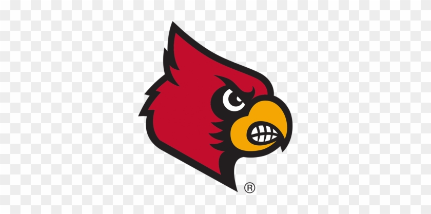
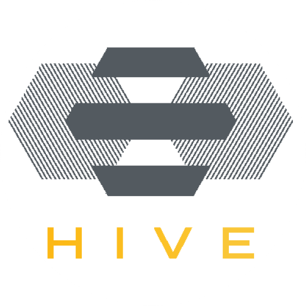

Mohamed Konsowa
AI & Machine Learning Engineer
Building intelligent systems at the intersection of deep learning, NLP, and multimodal AI · University of Louisville · GPA 3.94
Who I Am
I'm a Software Engineer with 2+ years of experience building scalable backend services, microservice architectures, and AI-integrated applications. Currently pursuing a B.S. in Computer Science & Engineering at the University of Louisville (GPA: 3.94), graduating August 2026.
My work spans medical AI, anomaly detection, conversational AI, and agentic systems. I love building things that push the boundary of what AI can do — from diagnosing dementia via VR sensor data to creating multi-agent orchestration platforms that write software autonomously.
Outside of research, I mentor undergraduate REU students, compete in programming contests, and judge AI olympiads. Based between Louisville, KY and Alexandria, Egypt.
University of Louisville

B.S. Computer Science & Engineering
GPA: 3.94Experience
Software Engineer — Agentic Platform Development

HIVE AI Innovation Center · GE Appliances Collaboration · University of Louisville
- Designed and led a microservice-based platform architecture on GCP for scalable isolation and independent deployability across agentic workflows.
- Defined secure inter-service communication with JWT-based authentication and authorization for consistent identity propagation across services.
- Evaluated and integrated MuleSoft as an enterprise API gateway to centralize API governance and policy enforcement.
- Designed orchestration workflows using REST APIs and MCP, enabling modular agent-to-agent and tool-based communication.
Software Engineering Intern 
UofL · Center for Human Systems Engineering
- Developed a multimodal VR-based dementia detection system using BERT, CNNs, and DNNs, achieving 90%+ accuracy in testing.
- Boosted model recall by 15% using Optuna for hyperparameter tuning and ensemble modeling techniques.
- Collected and analyzed multi-sensor HCI data from 50+ study participants to drive research insights.
- Mentored 5 undergraduate REU students, offering hands-on guidance in ML implementation and debugging.
Projects
Agentic Web App Generator
DS-STAR Architecture
Built an agentic platform leveraging DS-STAR architecture to translate user prompts into functional web applications within a sandboxed environment. Implemented multi-agent orchestration (planning, code generation, execution) with tool integration, enabling safe, automated software creation with minimal human intervention.
Live DemoRagyVerse
AI-powered knowledge platform with PDF ingestion, semantic search, and conversational retrieval using FastAPI, LangChain, FAISS, and Hugging Face.
AMD Detection (Capstone)
Trained a ResNet50 on retinal images to detect Age-related Macular Degeneration; improved precision by 15% through advanced tuning techniques.
Scylla — AI Anomaly Detection
Built VAE-LSTM and VAE-CNN models for log and metric anomaly detection; deployed in a fully Dockerized pipeline for production monitoring.
Driver Gaze Prediction & Scoring
Eye-tracking-based driving assessment system that predicts optimal gaze targets from scene context and scores novice drivers by measuring attention alignment over time.
Multimodal Dementia Detection
Flask-based dementia classifier combining audio speech features and BERT-based NLP embeddings for early clinical screening.
Job Roadmap Generator
Used RAG and GANs to synthesize tailored career roadmaps and mock interview questions from resumes — personalized at scale.
Technical Skills
Languages
Libraries & Frameworks
Tools
AI Domains
Awards & Competitions
ECPC Finalist
2022 & 2023 — Led my team to the Egyptian Collegiate Programming Contest national finals two consecutive years.
2nd Place — AI Hackathon
2024 — Built a PDF Q&A system using Hugging Face Transformers, earning second place at a competitive AI hackathon.
AI Olympiad Judge
2024 — Evaluated vision/NLP projects and embedded system integrations as an official judge at an AI Olympiad.
Get in Touch
Whether it's a research collaboration, job opportunity, or just a chat about AI — I'd love to hear from you.